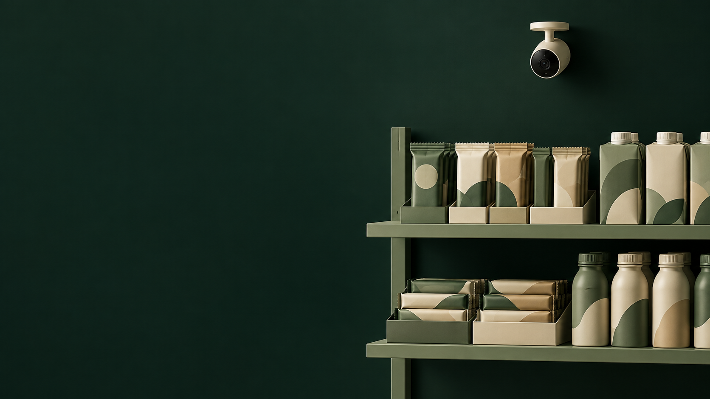
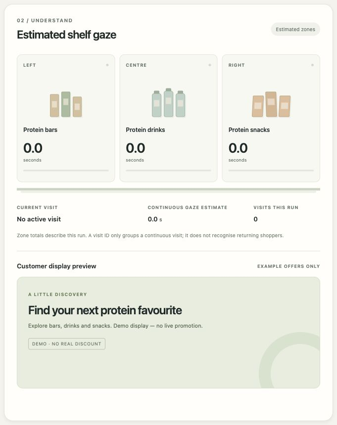
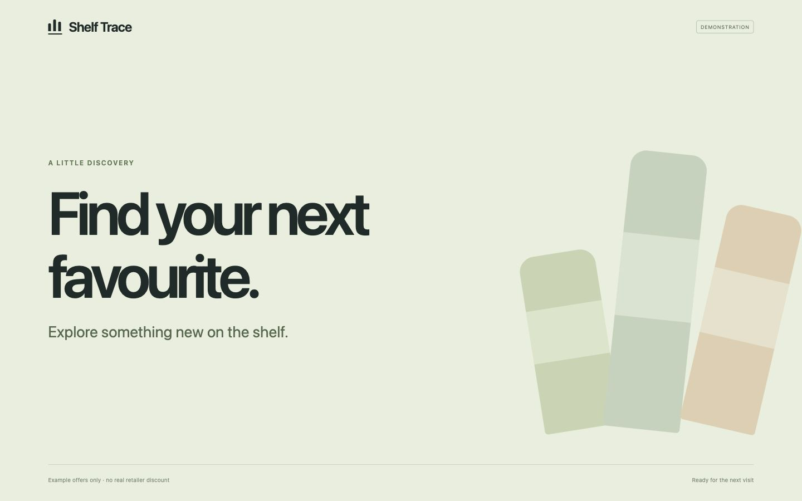

Trace studies shelf browsing before checkout.
A local webcam prototype
Sales records show what shoppers bought.
Browsing leaves questions.
Which shelf areas receive sustained estimated gaze?
Does that pattern change when the shelf changes?
Could it help a retailer choose what to test next?

Estimated gaze towards a broad shelf zone accumulates dwell.
Tracks group observations without identifying a person. Unclear views stay unassigned.
The operator enters shelf measurements. Shoppers do not complete a calibration routine.
Camera off. No shopper observations.
The default dwell threshold.
Unclear or stale views clear the zone offer.
Watch the interface tour
Idle interface capture. Offers are examples and cannot be redeemed.
Local service, shelf geometry, temporary visit logic and both interfaces.
Open Model Zoo models and the upstream gaze demo.
Explore the system mapCaptures a frame for the local service.
Runs OpenVINO and maps gaze to the shelf.
Accumulates dwell and selects an example offer.
Polls the API for the current message.
No external inference service after setup.
Python tests
JavaScript tests
Passed in the recorded software review on 3 October 2026.
Browser checks cover setup, reset, restart and display recovery.
Physical shelf gaze accuracy and performance across real browsing conditions.
Product recognition, purchases and returning-customer identification are not implemented.
First target: next week's share of estimated gaze time by shelf zone.
Measure accuracy and unassigned views at known shelf targets.
Save daily aggregates. Log shelf changes and displayed offers.
Add UK search interest and retailer sales when available.
Test later periods against a forecast using last week's value.
Forecasting, saved history and external data connections are not implemented.
Test the measurement.
Use known gaze targets across distance, lighting, glasses and occlusion.
Report zone accuracy and unassigned observations before testing a forecast.